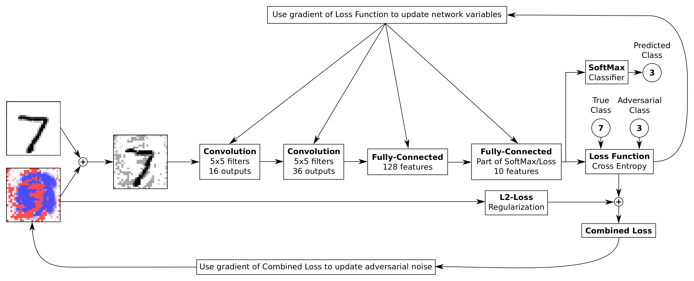
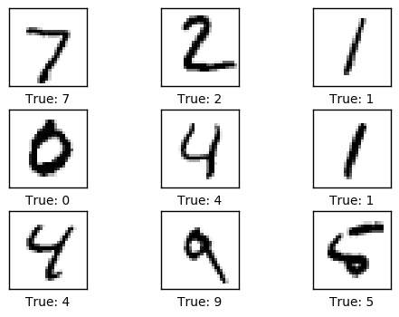
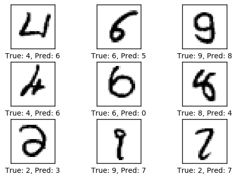
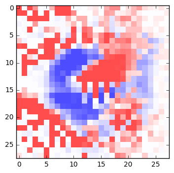
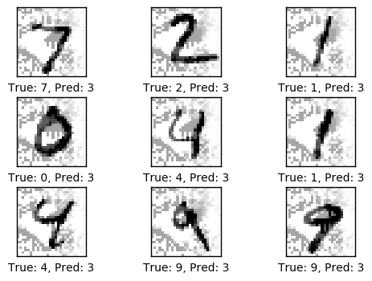
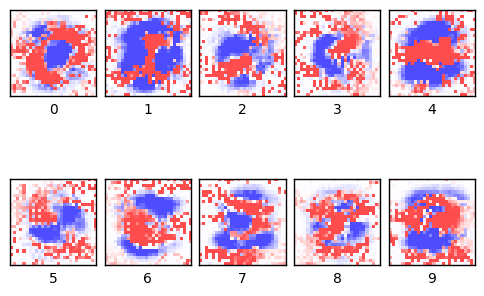
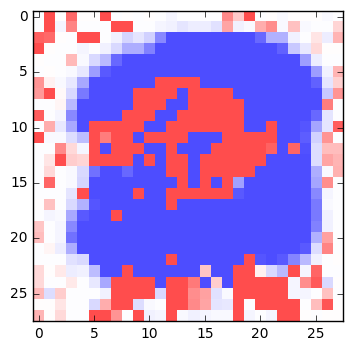
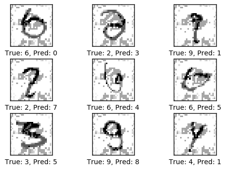
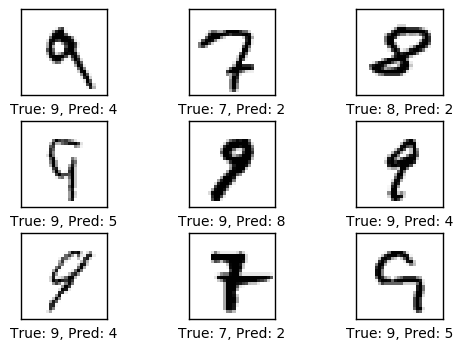

TensorFlow 教程 #12
MNIST的对抗噪声
by Magnus Erik Hvass Pedersen
/ GitHub / Videos on YouTube
中文翻译 thrillerist/Github
介绍
之前的教程#11展示了如何找到最先进神经网络的对抗样本，它会引起网络误分类图像，即使在人眼看来图像完全相同。例如，在添加了对抗噪声之后，一张鹦鹉的图像会被误分类成书架，但在人类眼中图像完全没什么变化。
教程#11是通过每张图像的优化过程来寻找对抗噪声的。由于噪声是专门为某张图像生成，因此它可能不是通用的，无法在其他图像上起作用。
本教程将会找到那些导致几乎所有输入图像都被误分类成目标类别的对抗噪声。我们使用MNIST手写数字数据集为例。现在，对抗噪声对人眼是清晰可见的，但人类还是能够很容易地辨认出数字，然而神经网络几乎将所有图像误分类。
这篇教程里，我们还会试着让神经网络对对抗噪声免疫。
教程 #11 用Numpy来做对抗优化。在这篇教程里，我们会直接在TensorFlow里实现优化过程。这会更快速，尤其是在使用GPU的时候，因为不用每次迭代都在GPU里拷贝数据。
推荐你先学习教程 #11。你也需要大概地熟悉神经网络，详见教程 #01和 #02。
流程图
下面的图表直接展示了之后实现的卷积神经网络中数据的传递。
例子展示的是数字7的输入图像。随后在图像上添加对抗噪声。红色的噪声点是正值，它让像素值更深，蓝色噪声点是负值，让输入图像在此处的颜色更浅。
这些噪声图像传到神经网络中，然后得到一个预测数字。这种情况下，对抗噪声让神经网络相信这张数字7的图像显示的是数字3。噪声对人眼是清晰可见的，但人类仍然可以容易地辨认出数字7来。
这边值得注意的是，单一的噪声模式会导致神经网络将几乎所有的输入图像都误分类成期望的目标类型。
在这个神经网络中有两个单独的优化程序。首先，我们优化神经网络的变量来分类训练集的图像。这是神经网络的常规优化过程。一旦分类准确率足够高，我们就切换到第二个优化程序，（它用来）寻找单一模式的对抗噪声，使得所有的输入图像都被误分类成目标类型。
这两个优化程序是完全独立的。第一个程序只修改量神经网络的变量，第二个程序只修改对抗噪声。
from IPython.display import Image
Image('images/12_adversarial_noise_flowchart.png')

导入
%matplotlib inline
import matplotlib.pyplot as plt
import tensorflow as tf
import numpy as np
from sklearn.metrics import confusion_matrix
import time
from datetime import timedelta
import math
# We also need PrettyTensor.
import prettytensor as pt
使用Python3.5.2（Anaconda）开发，TensorFlow版本是：
tf.__version__
'0.12.0-rc0'
PrettyTensor 版本:
pt.__version__
'0.7.1'
载入数据
MNIST数据集大约12MB，如果没在给定路径中找到就会自动下载。
from tensorflow.examples.tutorials.mnist import input_data
data = input_data.read_data_sets('data/MNIST/', one_hot=True)
Extracting data/MNIST/train-images-idx3-ubyte.gz
Extracting data/MNIST/train-labels-idx1-ubyte.gz
Extracting data/MNIST/t10k-images-idx3-ubyte.gz
Extracting data/MNIST/t10k-labels-idx1-ubyte.gz
现在已经载入了MNIST数据集，它由70,000张图像和对应的标签（比如图像的类别）组成。数据集分成三份互相独立的子集。我们在教程中只用训练集和测试集。
print("Size of:")
print("- Training-set:\t\t{}".format(len(data.train.labels)))
print("- Test-set:\t\t{}".format(len(data.test.labels)))
print("- Validation-set:\t{}".format(len(data.validation.labels)))
Size of:
- Training-set: 55000
- Test-set: 10000
- Validation-set: 5000
类型标签使用One-Hot编码，这意外每个标签是长为10的向量，除了一个元素之外，其他的都为零。这个元素的索引就是类别的数字，即相应图片中画的数字。我们也需要测试数据集类别数字的整型值，现在计算它。
data.test.cls = np.argmax(data.test.labels, axis=1)
数据维度
在下面的源码中，有很多地方用到了数据维度。它们只在一个地方定义，因此我们可以在代码中使用这些数字而不是直接写数字。
# We know that MNIST images are 28 pixels in each dimension.
img_size = 28
# Images are stored in one-dimensional arrays of this length.
img_size_flat = img_size * img_size
# Tuple with height and width of images used to reshape arrays.
img_shape = (img_size, img_size)
# Number of colour channels for the images: 1 channel for gray-scale.
num_channels = 1
# Number of classes, one class for each of 10 digits.
num_classes = 10
用来绘制图像的帮助函数
这个函数用来在3x3的栅格中画9张图像，然后在每张图像下面写出真实类别和预测类别。如果提供了噪声，就将其添加到所有图像上。
def plot_images(images, cls_true, cls_pred=None, noise=0.0):
assert len(images) == len(cls_true) == 9
# Create figure with 3x3 sub-plots.
fig, axes = plt.subplots(3, 3)
fig.subplots_adjust(hspace=0.3, wspace=0.3)
for i, ax in enumerate(axes.flat):
# Get the i'th image and reshape the array.
image = images[i].reshape(img_shape)
# Add the adversarial noise to the image.
image += noise
# Ensure the noisy pixel-values are between 0 and 1.
image = np.clip(image, 0.0, 1.0)
# Plot image.
ax.imshow(image,
cmap='binary', interpolation='nearest')
# Show true and predicted classes.
if cls_pred is None:
xlabel = "True: {0}".format(cls_true[i])
else:
xlabel = "True: {0}, Pred: {1}".format(cls_true[i], cls_pred[i])
# Show the classes as the label on the x-axis.
ax.set_xlabel(xlabel)
# Remove ticks from the plot.
ax.set_xticks([])
ax.set_yticks([])
# Ensure the plot is shown correctly with multiple plots
# in a single Notebook cell.
plt.show()
绘制几张图像来看看数据是否正确
# Get the first images from the test-set.
images = data.test.images[0:9]
# Get the true classes for those images.
cls_true = data.test.cls[0:9]
# Plot the images and labels using our helper-function above.
plot_images(images=images, cls_true=cls_true)

TensorFlow图（Graph）
现在将使用TensorFlow和PrettyTensor构建神经网络的计算图。 与往常一样，我们需要为图像创建占位符变量，将其送到计算图中，然后将对抗噪声添加到图像中。接着把噪声图像用作卷积神经网络的输入。
这个网络有两个单独的优化程序。神经网络本身变量的一个常规优化过程，以及对抗噪声的另一个优化过程。 两个优化过程都直接在TensorFlow中实现。
占位符 （Placeholder）变量
占位符变量为TensorFlow中的计算图提供了输入，我们可以在每次执行图的时候更改。 我们称为feeding占位符变量。
首先，我们为输入图像定义占位符变量。 这允许我们改变输入到TensorFlow图中的图像。 这是一个张量，代表它是一个多维数组。 数据类型设为float32，形状设为[None，img_size_flat]，其中None代表张量可以保存任意数量的图像，每个图像是长度为img_size_flat的向量。
x = tf.placeholder(tf.float32, shape=[None, img_size_flat], name='x')
卷积层希望x被编码为4维张量，因此我们需要将它的形状转换至[num_images, img_height, img_width, num_channels]。注意img_height == img_width == img_size，如果第一维的大小设为-1， num_images的大小也会被自动推导出来。转换运算如下：
x_image = tf.reshape(x, [-1, img_size, img_size, num_channels])
接下来我们为输入变量x中的图像所对应的真实标签定义占位符变量。变量的形状是[None, num_classes]，这代表着它保存了任意数量的标签，每个标签是长度为num_classes的向量，本例中长度为10。
y_true = tf.placeholder(tf.float32, shape=[None, num_classes], name='y_true')
我们也可以为类别号提供一个占位符，但这里用argmax来计算它。这里只是TensorFlow中的一些操作符，没有执行什么运算。
y_true_cls = tf.argmax(y_true, dimension=1)
对抗噪声
输入图像的像素值在0.0到1.0之间。对抗噪声是在输入图像上添加或删除的数值。
对抗噪声的界限设为0.35，则噪声在正负0.35之间。
noise_limit = 0.35
对抗噪声的优化器会试图最小化两个损失度量：(1)神经网络常规的损失度量，因此我们会找到使得目标类型分类准确率最高的噪声；(2)L2-loss度量，它会保持尽可能低的噪声。
下面的权重决定了与常规的损失度量相比，L2-loss的重要性。通常接近零的L2权重表现的更好。
noise_l2_weight = 0.02
当我们为噪声创建变量时，必须告知TensorFlow它属于哪一个变量集合，这样，后面就能通知两个优化器要更新哪些变量。
首先为变量集合定义一个名称。这只是一个字符串。
ADVERSARY_VARIABLES = 'adversary_variables'
接着，创建噪声变量所属集合的列表。如果我们将噪声变量添加到集合tf.GraphKeys.VARIABLES中，它就会和TensorFlow图中的其他变量一起被初始化，但不会被优化。这里有点混乱。
collections = [tf.GraphKeys.VARIABLES, ADVERSARY_VARIABLES]
现在我们可以为对抗噪声添加新的变量。它会被初始化为零。它是不可训练的，因此并不会与神经网络中的其他变量一起被优化。这让我们可以创建两个独立的优化程序。
x_noise = tf.Variable(tf.zeros([img_size, img_size, num_channels]),
name='x_noise', trainable=False,
collections=collections)
对抗噪声会被限制在我们上面设定的噪声界限内。注意此时并未在计算图表内进行计算，在优化步骤之后执行，详见下文。
x_noise_clip = tf.assign(x_noise, tf.clip_by_value(x_noise,
-noise_limit,
noise_limit))
噪声图像只是输入图像和对抗噪声的总和。
x_noisy_image = x_image + x_noise
把噪声图像添加到输入图像上时，它可能会溢出有效图像（像素）的边界，因此我们裁剪/限制噪声图像，确保它的像素值在0到1之间。
x_noisy_image = tf.clip_by_value(x_noisy_image, 0.0, 1.0)
卷积神经网络
我们会用PrettyTensor来构造卷积神经网络。首先需要将噪声图像的张量封装到PrettyTensor对象中，该对象提供了构造神经网络的函数。
x_pretty = pt.wrap(x_noisy_image)
将输入图像封装到PrettyTensor对象之后，用几行代码就能添加卷积层和全连接层。
with pt.defaults_scope(activation_fn=tf.nn.relu):
y_pred, loss = x_pretty.\
conv2d(kernel=5, depth=16, name='layer_conv1').\
max_pool(kernel=2, stride=2).\
conv2d(kernel=5, depth=36, name='layer_conv2').\
max_pool(kernel=2, stride=2).\
flatten().\
fully_connected(size=128, name='layer_fc1').\
softmax_classifier(num_classes=num_classes, labels=y_true)
注意，在with代码块中，pt.defaults_scope(activation_fn=tf.nn.relu) 把 activation_fn=tf.nn.relu当作每个的层参数，因此这些层都用到了 Rectified Linear Units (ReLU) 。defaults_scope使我们能更方便地修改所有层的参数。
正常训练的优化器
这是会在常规优化程序里被训练的神经网络的变量列表。注意，'x_noise:0'不在列表里，因此这个程序并不会优化对抗噪声。
[var.name for var in tf.trainable_variables()]
['layer_conv1/weights:0',
'layer_conv1/bias:0',
'layer_conv2/weights:0',
'layer_conv2/bias:0',
'layer_fc1/weights:0',
'layer_fc1/bias:0',
'fully_connected/weights:0',
'fully_connected/bias:0']
神经网络中这些变量的优化由Adam-optimizer完成，它用到上面PretyTensor构造的神经网络所返回的损失度量。
此时不执行优化，实际上这里根本没有计算，我们只是把优化对象添加到TensorFlow图表中，以便稍后运行。
optimizer = tf.train.AdamOptimizer(learning_rate=1e-4).minimize(loss)
对抗噪声的优化器
获取变量列表，这些是需要在第二个程序里为对抗噪声做优化的变量。
adversary_variables = tf.get_collection(ADVERSARY_VARIABLES)
展示变量名称列表。这里只有一个元素，是我们在上面创建的对抗噪声变量。
[var.name for var in adversary_variables]
['x_noise:0']
我们会将常规优化的损失函数与所谓的L2-loss相结合。这将会得到在最佳分类准确率下的最小对抗噪声。
L2-loss由一个通常设置为接近零的权重缩放。
l2_loss_noise = noise_l2_weight * tf.nn.l2_loss(x_noise)
将正常的损失函数和对抗噪声的L2-loss相结合。
loss_adversary = loss + l2_loss_noise
现在可以为对抗噪声创建优化器。由于优化器并不能更新神经网络的所有变量，我们必须给出一个需要更新的变量的列表，即对抗噪声变量。注意，这里的学习率比上面的常规优化器要大很多。
optimizer_adversary = tf.train.AdamOptimizer(learning_rate=1e-2).minimize(loss_adversary, var_list=adversary_variables)
现在我们为神经网络创建了两个优化器，一个用于神经网络的变量，另一个用于对抗噪声的单个变量。
性能度量
在TensorFlow图表中，我们需要另外一些操作，以便在优化过程中向用户展示进度。
首先，计算出神经网络输出y_pred的预测类别号，它是一个包含10个元素的向量。类型号是最大元素的索引。
y_pred_cls = tf.argmax(y_pred, dimension=1)
接着创建一个布尔数组，用来表示每张图像的预测类型是否与真实类型相同。
correct_prediction = tf.equal(y_pred_cls, y_true_cls)
上面的计算先将布尔值向量类型转换成浮点型向量，这样子False就变成0，True变成1，然后计算这些值的平均数，以此来计算分类的准确度。
accuracy = tf.reduce_mean(tf.cast(correct_prediction, tf.float32))
运行TensorFlow
创建TensorFlow会话（session）
一旦创建了TensorFlow图，我们需要创建一个TensorFlow会话，用来运行图。
session = tf.Session()
初始化变量
我们需要在开始优化weights和biases变量之前对它们进行初始化。
session.run(tf.global_variables_initializer())
帮助函数将对抗噪声初始化/重置为零。
def init_noise():
session.run(tf.variables_initializer([x_noise]))
调用函数来初始化对抗噪声。
init_noise()
用来优化迭代的帮助函数
在训练集中有55,000张图。用全部图像计算模型的梯度会花很多时间。因此我们在优化器的每次迭代里只用到了一小部分的图像。
如果内存耗尽导致电脑死机或变得很慢，你应该试着减少这些数量，但同时可能还需要更优化的迭代。
train_batch_size = 64
下面的函数用来执行一定数量的优化迭代，以此来逐渐改善神经网络的变量。在每次迭代中，会从训练集中选择新的一批数据，然后TensorFlow在这些训练样本上执行优化。每100次迭代会打印出进度。
这个函数与之前教程中的相似，除了现在它多了一个对抗目标类别(adversary target-class)的参数。当目标类别设为整数时，将会用它取代训练集中的真实类别号。也会用对抗优化器代替常规优化器，然后在每次优化之后，噪声将被限制/截断到允许的范围。这里优化了对抗噪声，并忽略神经网络中的其他变量。
def optimize(num_iterations, adversary_target_cls=None):
# Start-time used for printing time-usage below.
start_time = time.time()
for i in range(num_iterations):
# Get a batch of training examples.
# x_batch now holds a batch of images and
# y_true_batch are the true labels for those images.
x_batch, y_true_batch = data.train.next_batch(train_batch_size)
# If we are searching for the adversarial noise, then
# use the adversarial target-class instead.
if adversary_target_cls is not None:
# The class-labels are One-Hot encoded.
# Set all the class-labels to zero.
y_true_batch = np.zeros_like(y_true_batch)
# Set the element for the adversarial target-class to 1.
y_true_batch[:, adversary_target_cls] = 1.0
# Put the batch into a dict with the proper names
# for placeholder variables in the TensorFlow graph.
feed_dict_train = {x: x_batch,
y_true: y_true_batch}
# If doing normal optimization of the neural network.
if adversary_target_cls is None:
# Run the optimizer using this batch of training data.
# TensorFlow assigns the variables in feed_dict_train
# to the placeholder variables and then runs the optimizer.
session.run(optimizer, feed_dict=feed_dict_train)
else:
# Run the adversarial optimizer instead.
# Note that we have 'faked' the class above to be
# the adversarial target-class instead of the true class.
session.run(optimizer_adversary, feed_dict=feed_dict_train)
# Clip / limit the adversarial noise. This executes
# another TensorFlow operation. It cannot be executed
# in the same session.run() as the optimizer, because
# it may run in parallel so the execution order is not
# guaranteed. We need the clip to run after the optimizer.
session.run(x_noise_clip)
# Print status every 100 iterations.
if (i % 100 == 0) or (i == num_iterations - 1):
# Calculate the accuracy on the training-set.
acc = session.run(accuracy, feed_dict=feed_dict_train)
# Message for printing.
msg = "Optimization Iteration: {0:>6}, Training Accuracy: {1:>6.1%}"
# Print it.
print(msg.format(i, acc))
# Ending time.
end_time = time.time()
# Difference between start and end-times.
time_dif = end_time - start_time
# Print the time-usage.
print("Time usage: " + str(timedelta(seconds=int(round(time_dif)))))
获取及绘制噪声的帮助函数
这个函数从TensorFlow图表中获取对抗噪声。
def get_noise():
# Run the TensorFlow session to retrieve the contents of
# the x_noise variable inside the graph.
noise = session.run(x_noise)
return np.squeeze(noise)
这个函数绘制了对抗噪声，并打印一些统计信息。
def plot_noise():
# Get the adversarial noise from inside the TensorFlow graph.
noise = get_noise()
# Print statistics.
print("Noise:")
print("- Min:", noise.min())
print("- Max:", noise.max())
print("- Std:", noise.std())
# Plot the noise.
plt.imshow(noise, interpolation='nearest', cmap='seismic',
vmin=-1.0, vmax=1.0)
用来绘制错误样本的帮助函数
函数用来绘制测试集中被误分类的样本。
def plot_example_errors(cls_pred, correct):
# This function is called from print_test_accuracy() below.
# cls_pred is an array of the predicted class-number for
# all images in the test-set.
# correct is a boolean array whether the predicted class
# is equal to the true class for each image in the test-set.
# Negate the boolean array.
incorrect = (correct == False)
# Get the images from the test-set that have been
# incorrectly classified.
images = data.test.images[incorrect]
# Get the predicted classes for those images.
cls_pred = cls_pred[incorrect]
# Get the true classes for those images.
cls_true = data.test.cls[incorrect]
# Get the adversarial noise from inside the TensorFlow graph.
noise = get_noise()
# Plot the first 9 images.
plot_images(images=images[0:9],
cls_true=cls_true[0:9],
cls_pred=cls_pred[0:9],
noise=noise)
绘制混淆（confusion）矩阵的帮助函数
def plot_confusion_matrix(cls_pred):
# This is called from print_test_accuracy() below.
# cls_pred is an array of the predicted class-number for
# all images in the test-set.
# Get the true classifications for the test-set.
cls_true = data.test.cls
# Get the confusion matrix using sklearn.
cm = confusion_matrix(y_true=cls_true,
y_pred=cls_pred)
# Print the confusion matrix as text.
print(cm)
展示性能的帮助函数
函数用来打印测试集上的分类准确度。
为测试集上的所有图片计算分类会花费一段时间，因此我们直接用这个函数来调用上面的结果，这样就不用每次都重新计算了。
这个函数可能会占用很多电脑内存，这也是为什么将测试集分成更小的几个部分。如果你的电脑内存比较小或死机了，就要试着降低batch-size。
# Split the test-set into smaller batches of this size.
test_batch_size = 256
def print_test_accuracy(show_example_errors=False,
show_confusion_matrix=False):
# Number of images in the test-set.
num_test = len(data.test.images)
# Allocate an array for the predicted classes which
# will be calculated in batches and filled into this array.
cls_pred = np.zeros(shape=num_test, dtype=np.int)
# Now calculate the predicted classes for the batches.
# We will just iterate through all the batches.
# There might be a more clever and Pythonic way of doing this.
# The starting index for the next batch is denoted i.
i = 0
while i < num_test:
# The ending index for the next batch is denoted j.
j = min(i + test_batch_size, num_test)
# Get the images from the test-set between index i and j.
images = data.test.images[i:j, :]
# Get the associated labels.
labels = data.test.labels[i:j, :]
# Create a feed-dict with these images and labels.
feed_dict = {x: images,
y_true: labels}
# Calculate the predicted class using TensorFlow.
cls_pred[i:j] = session.run(y_pred_cls, feed_dict=feed_dict)
# Set the start-index for the next batch to the
# end-index of the current batch.
i = j
# Convenience variable for the true class-numbers of the test-set.
cls_true = data.test.cls
# Create a boolean array whether each image is correctly classified.
correct = (cls_true == cls_pred)
# Calculate the number of correctly classified images.
# When summing a boolean array, False means 0 and True means 1.
correct_sum = correct.sum()
# Classification accuracy is the number of correctly classified
# images divided by the total number of images in the test-set.
acc = float(correct_sum) / num_test
# Print the accuracy.
msg = "Accuracy on Test-Set: {0:.1%} ({1} / {2})"
print(msg.format(acc, correct_sum, num_test))
# Plot some examples of mis-classifications, if desired.
if show_example_errors:
print("Example errors:")
plot_example_errors(cls_pred=cls_pred, correct=correct)
# Plot the confusion matrix, if desired.
if show_confusion_matrix:
print("Confusion Matrix:")
plot_confusion_matrix(cls_pred=cls_pred)
神经网络的常规优化
此时对抗噪声还没有效果，因为上面只将它初始化为零，在优化过程中并未更新。
optimize(num_iterations=1000)
Optimization Iteration: 0, Training Accuracy: 12.5%
Optimization Iteration: 100, Training Accuracy: 90.6%
Optimization Iteration: 200, Training Accuracy: 84.4%
Optimization Iteration: 300, Training Accuracy: 84.4%
Optimization Iteration: 400, Training Accuracy: 89.1%
Optimization Iteration: 500, Training Accuracy: 87.5%
Optimization Iteration: 600, Training Accuracy: 93.8%
Optimization Iteration: 700, Training Accuracy: 93.8%
Optimization Iteration: 800, Training Accuracy: 93.8%
Optimization Iteration: 900, Training Accuracy: 96.9%
Optimization Iteration: 999, Training Accuracy: 92.2%
Time usage: 0:00:03
测试集上的分类准确率大约96-97%。（每次运行Python Notobook时，结果会有所变化。）
print_test_accuracy(show_example_errors=True)
Accuracy on Test-Set: 96.3% (9633 / 10000)
Example errors:

寻找对抗噪声
在我们开始优化对抗噪声之前，先将它初始化为零。上面已经完成了这一步，但这里再执行一次，以防你用其他目标类型重新运行代码。
init_noise()
现在执行对抗噪声的优化。这里使用对抗优化器而不是常规优化器，这说明它只优化对抗噪声变量，同时忽略神经网络中的其他变量。
optimize(num_iterations=1000, adversary_target_cls=3)
Optimization Iteration: 0, Training Accuracy: 6.2%
Optimization Iteration: 100, Training Accuracy: 93.8%
Optimization Iteration: 200, Training Accuracy: 96.9%
Optimization Iteration: 300, Training Accuracy: 98.4%
Optimization Iteration: 400, Training Accuracy: 95.3%
Optimization Iteration: 500, Training Accuracy: 96.9%
Optimization Iteration: 600, Training Accuracy: 100.0%
Optimization Iteration: 700, Training Accuracy: 98.4%
Optimization Iteration: 800, Training Accuracy: 95.3%
Optimization Iteration: 900, Training Accuracy: 93.8%
Optimization Iteration: 999, Training Accuracy: 100.0%
Time usage: 0:00:03
现在对抗噪声已经被优化了，可以在一张图像中展示出来。红色像素显示了正噪声值，蓝色像素显示了负噪声值。这个噪声模式将会被添加到每张输入图像中。正噪声值（红）使像素变暗，负噪声值（蓝）使像素变亮。如下所示。
plot_noise()
Noise:
- Min: -0.35
- Max: 0.35
- Std: 0.195455

当测试集的所有图像上都添加了该噪声之后，根据选定的目标类别，分类准确率通常在是10-15%之间。我们也能从混淆矩阵中看出，测试集中的大多数图像都被分类成期望的目标类别——尽管有些目标类型比其他的需要更多的对抗噪声。
所以我们找到了使对抗噪声，使神经网络将测试集中绝大部分图像误分类成期望的类别。
我们也可以画出一些带有对抗噪声的误分类图像样本。噪声清晰可见，但人眼还是可以轻易地分辨出数字。
print_test_accuracy(show_example_errors=True,
show_confusion_matrix=True)
Accuracy on Test-Set: 13.2% (1323 / 10000)
Example errors:

Confusion Matrix:
[[ 85 0 0 895 0 0 0 0 0 0]
[ 0 0 0 1135 0 0 0 0 0 0]
[ 0 0 46 986 0 0 0 0 0 0]
[ 0 0 0 1010 0 0 0 0 0 0]
[ 0 0 0 959 20 0 0 0 3 0]
[ 0 0 0 847 0 45 0 0 0 0]
[ 0 0 0 914 0 1 42 0 1 0]
[ 0 0 0 977 0 0 0 51 0 0]
[ 0 0 0 952 0 0 0 0 22 0]
[ 0 0 1 1006 0 0 0 0 0 2]]
所有目标类别的对抗噪声
这是帮助函数用于寻找所有目标类别的对抗噪声。函数从类型号0遍历到9，执行上面的优化。然后将结果保存到一个数组中。
def find_all_noise(num_iterations=1000):
# Adversarial noise for all target-classes.
all_noise = []
# For each target-class.
for i in range(num_classes):
print("Finding adversarial noise for target-class:", i)
# Reset the adversarial noise to zero.
init_noise()
# Optimize the adversarial noise.
optimize(num_iterations=num_iterations,
adversary_target_cls=i)
# Get the adversarial noise from inside the TensorFlow graph.
noise = get_noise()
# Append the noise to the array.
all_noise.append(noise)
# Print newline.
print()
return all_noise
all_noise = find_all_noise(num_iterations=300)
Finding adversarial noise for target-class: 0
Optimization Iteration: 0, Training Accuracy: 9.4%
Optimization Iteration: 100, Training Accuracy: 90.6%
Optimization Iteration: 200, Training Accuracy: 92.2%
Optimization Iteration: 299, Training Accuracy: 93.8%
Time usage: 0:00:01
Finding adversarial noise for target-class: 1
Optimization Iteration: 0, Training Accuracy: 7.8%
Optimization Iteration: 100, Training Accuracy: 62.5%
Optimization Iteration: 200, Training Accuracy: 62.5%
Optimization Iteration: 299, Training Accuracy: 75.0%
Time usage: 0:00:01
Finding adversarial noise for target-class: 2
Optimization Iteration: 0, Training Accuracy: 7.8%
Optimization Iteration: 100, Training Accuracy: 93.8%
Optimization Iteration: 200, Training Accuracy: 95.3%
Optimization Iteration: 299, Training Accuracy: 96.9%
Time usage: 0:00:01
Finding adversarial noise for target-class: 3
Optimization Iteration: 0, Training Accuracy: 6.2%
Optimization Iteration: 100, Training Accuracy: 98.4%
Optimization Iteration: 200, Training Accuracy: 96.9%
Optimization Iteration: 299, Training Accuracy: 98.4%
Time usage: 0:00:01
Finding adversarial noise for target-class: 4
Optimization Iteration: 0, Training Accuracy: 12.5%
Optimization Iteration: 100, Training Accuracy: 81.2%
Optimization Iteration: 200, Training Accuracy: 82.8%
Optimization Iteration: 299, Training Accuracy: 82.8%
Time usage: 0:00:01
Finding adversarial noise for target-class: 5
Optimization Iteration: 0, Training Accuracy: 7.8%
Optimization Iteration: 100, Training Accuracy: 96.9%
Optimization Iteration: 200, Training Accuracy: 96.9%
Optimization Iteration: 299, Training Accuracy: 98.4%
Time usage: 0:00:01
Finding adversarial noise for target-class: 6
Optimization Iteration: 0, Training Accuracy: 6.2%
Optimization Iteration: 100, Training Accuracy: 93.8%
Optimization Iteration: 200, Training Accuracy: 92.2%
Optimization Iteration: 299, Training Accuracy: 96.9%
Time usage: 0:00:01
Finding adversarial noise for target-class: 7
Optimization Iteration: 0, Training Accuracy: 12.5%
Optimization Iteration: 100, Training Accuracy: 98.4%
Optimization Iteration: 200, Training Accuracy: 93.8%
Optimization Iteration: 299, Training Accuracy: 92.2%
Time usage: 0:00:01
Finding adversarial noise for target-class: 8
Optimization Iteration: 0, Training Accuracy: 4.7%
Optimization Iteration: 100, Training Accuracy: 96.9%
Optimization Iteration: 200, Training Accuracy: 93.8%
Optimization Iteration: 299, Training Accuracy: 96.9%
Time usage: 0:00:01
Finding adversarial noise for target-class: 9
Optimization Iteration: 0, Training Accuracy: 7.8%
Optimization Iteration: 100, Training Accuracy: 84.4%
Optimization Iteration: 200, Training Accuracy: 87.5%
Optimization Iteration: 299, Training Accuracy: 90.6%
Time usage: 0:00:01
绘制所有目标类型的对抗噪声
这个帮助函数用于在栅格中绘制所有目标类型（0到9）的对抗噪声。
def plot_all_noise(all_noise):
# Create figure with 10 sub-plots.
fig, axes = plt.subplots(2, 5)
fig.subplots_adjust(hspace=0.2, wspace=0.1)
# For each sub-plot.
for i, ax in enumerate(axes.flat):
# Get the adversarial noise for the i'th target-class.
noise = all_noise[i]
# Plot the noise.
ax.imshow(noise,
cmap='seismic', interpolation='nearest',
vmin=-1.0, vmax=1.0)
# Show the classes as the label on the x-axis.
ax.set_xlabel(i)
# Remove ticks from the plot.
ax.set_xticks([])
ax.set_yticks([])
# Ensure the plot is shown correctly with multiple plots
# in a single Notebook cell.
plt.show()
plot_all_noise(all_noise)

红色像素显示正噪声值，蓝色像素显示负噪声值。
在其中一些噪声图像中，你可以看到数字的痕迹。例如，目标类型0的噪声显示了一个被蓝色包围的红圈。这说明会以圆形状将一些噪声添加到图像中，并抑制其他像素。这足以让MNIST数据集中的大部分图像被误分类成0。另外一个例子是3的噪声，图像的红色像素也显示了数字3的痕迹。但其他类别的噪声不太明显。
对抗噪声的免疫
现在试着让神经网络对对抗噪声免疫。我们重新训练神经网络，使其忽略对抗噪声。这个过程可以重复多次。
帮助函数创建了对对抗噪声免疫的神经网络
这是使神经网络对对抗噪声免疫的帮助函数。首先运行优化来找到对抗噪声。接着执行常规优化使神经网络对该噪声免疫。
def make_immune(target_cls, num_iterations_adversary=500,
num_iterations_immune=200):
print("Target-class:", target_cls)
print("Finding adversarial noise ...")
# Find the adversarial noise.
optimize(num_iterations=num_iterations_adversary,
adversary_target_cls=target_cls)
# Newline.
print()
# Print classification accuracy.
print_test_accuracy(show_example_errors=False,
show_confusion_matrix=False)
# Newline.
print()
print("Making the neural network immune to the noise ...")
# Try and make the neural network immune to this noise.
# Note that the adversarial noise has not been reset to zero
# so the x_noise variable still holds the noise.
# So we are training the neural network to ignore the noise.
optimize(num_iterations=num_iterations_immune)
# Newline.
print()
# Print classification accuracy.
print_test_accuracy(show_example_errors=False,
show_confusion_matrix=False)
对目标类型3的噪声免疫
首先尝试使神经网络对目标类型3的对抗噪声免疫。
我们先找到导致神经网络误分类测试集上大多数图像的对抗噪声。接着执行常规优化，其变量经过微调从而忽略噪声，使得分类准确率再次达到95-97%。
make_immune(target_cls=3)
Target-class: 3
Finding adversarial noise ...
Optimization Iteration: 0, Training Accuracy: 3.1%
Optimization Iteration: 100, Training Accuracy: 93.8%
Optimization Iteration: 200, Training Accuracy: 93.8%
Optimization Iteration: 300, Training Accuracy: 96.9%
Optimization Iteration: 400, Training Accuracy: 96.9%
Optimization Iteration: 499, Training Accuracy: 96.9%
Time usage: 0:00:02
Accuracy on Test-Set: 14.4% (1443 / 10000)
Making the neural network immune to the noise ...
Optimization Iteration: 0, Training Accuracy: 42.2%
Optimization Iteration: 100, Training Accuracy: 90.6%
Optimization Iteration: 199, Training Accuracy: 89.1%
Time usage: 0:00:01
Accuracy on Test-Set: 95.3% (9529 / 10000)
现在试着再次运行它。 现在更难为目标类别3找到对抗噪声。神经网络似乎已经变得对对抗噪声有些免疫。
make_immune(target_cls=3)
Target-class: 3
Finding adversarial noise ...
Optimization Iteration: 0, Training Accuracy: 7.8%
Optimization Iteration: 100, Training Accuracy: 32.8%
Optimization Iteration: 200, Training Accuracy: 32.8%
Optimization Iteration: 300, Training Accuracy: 29.7%
Optimization Iteration: 400, Training Accuracy: 34.4%
Optimization Iteration: 499, Training Accuracy: 26.6%
Time usage: 0:00:02
Accuracy on Test-Set: 72.1% (7207 / 10000)
Making the neural network immune to the noise ...
Optimization Iteration: 0, Training Accuracy: 75.0%
Optimization Iteration: 100, Training Accuracy: 93.8%
Optimization Iteration: 199, Training Accuracy: 92.2%
Time usage: 0:00:01
Accuracy on Test-Set: 95.2% (9519 / 10000)
对所有目标类型的噪声免疫
现在，试着使神经网络对所有目标类型的噪声免疫。不幸的是，看起来并不太好。
for i in range(10):
make_immune(target_cls=i)
# Print newline.
print()
Target-class: 0
Finding adversarial noise ...
Optimization Iteration: 0, Training Accuracy: 4.7%
Optimization Iteration: 100, Training Accuracy: 73.4%
Optimization Iteration: 200, Training Accuracy: 75.0%
Optimization Iteration: 300, Training Accuracy: 85.9%
Optimization Iteration: 400, Training Accuracy: 81.2%
Optimization Iteration: 499, Training Accuracy: 90.6%
Time usage: 0:00:02
Accuracy on Test-Set: 23.3% (2326 / 10000)
Making the neural network immune to the noise ...
Optimization Iteration: 0, Training Accuracy: 34.4%
Optimization Iteration: 100, Training Accuracy: 95.3%
Optimization Iteration: 199, Training Accuracy: 95.3%
Time usage: 0:00:01
Accuracy on Test-Set: 95.6% (9559 / 10000)
Target-class: 1
Finding adversarial noise ...
Optimization Iteration: 0, Training Accuracy: 12.5%
Optimization Iteration: 100, Training Accuracy: 57.8%
Optimization Iteration: 200, Training Accuracy: 62.5%
Optimization Iteration: 300, Training Accuracy: 62.5%
Optimization Iteration: 400, Training Accuracy: 67.2%
Optimization Iteration: 499, Training Accuracy: 67.2%
Time usage: 0:00:02
Accuracy on Test-Set: 42.2% (4218 / 10000)
Making the neural network immune to the noise ...
Optimization Iteration: 0, Training Accuracy: 59.4%
Optimization Iteration: 100, Training Accuracy: 93.8%
Optimization Iteration: 199, Training Accuracy: 95.3%
Time usage: 0:00:01
Accuracy on Test-Set: 95.5% (9555 / 10000)
Target-class: 2
Finding adversarial noise ...
Optimization Iteration: 0, Training Accuracy: 6.2%
Optimization Iteration: 100, Training Accuracy: 43.8%
Optimization Iteration: 200, Training Accuracy: 57.8%
Optimization Iteration: 300, Training Accuracy: 70.3%
Optimization Iteration: 400, Training Accuracy: 68.8%
Optimization Iteration: 499, Training Accuracy: 71.9%
Time usage: 0:00:02
Accuracy on Test-Set: 46.4% (4639 / 10000)
Making the neural network immune to the noise ...
Optimization Iteration: 0, Training Accuracy: 59.4%
Optimization Iteration: 100, Training Accuracy: 96.9%
Optimization Iteration: 199, Training Accuracy: 92.2%
Time usage: 0:00:01
Accuracy on Test-Set: 95.5% (9545 / 10000)
Target-class: 3
Finding adversarial noise ...
Optimization Iteration: 0, Training Accuracy: 6.2%
Optimization Iteration: 100, Training Accuracy: 48.4%
Optimization Iteration: 200, Training Accuracy: 46.9%
Optimization Iteration: 300, Training Accuracy: 53.1%
Optimization Iteration: 400, Training Accuracy: 50.0%
Optimization Iteration: 499, Training Accuracy: 48.4%
Time usage: 0:00:02
Accuracy on Test-Set: 56.5% (5648 / 10000)
Making the neural network immune to the noise ...
Optimization Iteration: 0, Training Accuracy: 54.7%
Optimization Iteration: 100, Training Accuracy: 93.8%
Optimization Iteration: 199, Training Accuracy: 96.9%
Time usage: 0:00:01
Accuracy on Test-Set: 95.8% (9581 / 10000)
Target-class: 4
Finding adversarial noise ...
Optimization Iteration: 0, Training Accuracy: 9.4%
Optimization Iteration: 100, Training Accuracy: 85.9%
Optimization Iteration: 200, Training Accuracy: 85.9%
Optimization Iteration: 300, Training Accuracy: 87.5%
Optimization Iteration: 400, Training Accuracy: 95.3%
Optimization Iteration: 499, Training Accuracy: 92.2%
Time usage: 0:00:02
Accuracy on Test-Set: 15.6% (1557 / 10000)
Making the neural network immune to the noise ...
Optimization Iteration: 0, Training Accuracy: 18.8%
Optimization Iteration: 100, Training Accuracy: 95.3%
Optimization Iteration: 199, Training Accuracy: 96.9%
Time usage: 0:00:01
Accuracy on Test-Set: 95.6% (9557 / 10000)
Target-class: 5
Finding adversarial noise ...
Optimization Iteration: 0, Training Accuracy: 18.8%
Optimization Iteration: 100, Training Accuracy: 71.9%
Optimization Iteration: 200, Training Accuracy: 90.6%
Optimization Iteration: 300, Training Accuracy: 95.3%
Optimization Iteration: 400, Training Accuracy: 89.1%
Optimization Iteration: 499, Training Accuracy: 92.2%
Time usage: 0:00:02
Accuracy on Test-Set: 17.4% (1745 / 10000)
Making the neural network immune to the noise ...
Optimization Iteration: 0, Training Accuracy: 15.6%
Optimization Iteration: 100, Training Accuracy: 96.9%
Optimization Iteration: 199, Training Accuracy: 95.3%
Time usage: 0:00:01
Accuracy on Test-Set: 96.0% (9601 / 10000)
Target-class: 6
Finding adversarial noise ...
Optimization Iteration: 0, Training Accuracy: 10.9%
Optimization Iteration: 100, Training Accuracy: 81.2%
Optimization Iteration: 200, Training Accuracy: 93.8%
Optimization Iteration: 300, Training Accuracy: 92.2%
Optimization Iteration: 400, Training Accuracy: 89.1%
Optimization Iteration: 499, Training Accuracy: 92.2%
Time usage: 0:00:02
Accuracy on Test-Set: 17.6% (1762 / 10000)
Making the neural network immune to the noise ...
Optimization Iteration: 0, Training Accuracy: 20.3%
Optimization Iteration: 100, Training Accuracy: 93.8%
Optimization Iteration: 199, Training Accuracy: 95.3%
Time usage: 0:00:01
Accuracy on Test-Set: 95.7% (9570 / 10000)
Target-class: 7
Finding adversarial noise ...
Optimization Iteration: 0, Training Accuracy: 14.1%
Optimization Iteration: 100, Training Accuracy: 93.8%
Optimization Iteration: 200, Training Accuracy: 98.4%
Optimization Iteration: 300, Training Accuracy: 100.0%
Optimization Iteration: 400, Training Accuracy: 96.9%
Optimization Iteration: 499, Training Accuracy: 100.0%
Time usage: 0:00:02
Accuracy on Test-Set: 12.8% (1281 / 10000)
Making the neural network immune to the noise ...
Optimization Iteration: 0, Training Accuracy: 12.5%
Optimization Iteration: 100, Training Accuracy: 98.4%
Optimization Iteration: 199, Training Accuracy: 98.4%
Time usage: 0:00:01
Accuracy on Test-Set: 95.9% (9587 / 10000)
Target-class: 8
Finding adversarial noise ...
Optimization Iteration: 0, Training Accuracy: 4.7%
Optimization Iteration: 100, Training Accuracy: 64.1%
Optimization Iteration: 200, Training Accuracy: 81.2%
Optimization Iteration: 300, Training Accuracy: 71.9%
Optimization Iteration: 400, Training Accuracy: 78.1%
Optimization Iteration: 499, Training Accuracy: 84.4%
Time usage: 0:00:02
Accuracy on Test-Set: 24.9% (2493 / 10000)
Making the neural network immune to the noise ...
Optimization Iteration: 0, Training Accuracy: 25.0%
Optimization Iteration: 100, Training Accuracy: 95.3%
Optimization Iteration: 199, Training Accuracy: 96.9%
Time usage: 0:00:01
Accuracy on Test-Set: 96.0% (9601 / 10000)
Target-class: 9
Finding adversarial noise ...
Optimization Iteration: 0, Training Accuracy: 9.4%
Optimization Iteration: 100, Training Accuracy: 48.4%
Optimization Iteration: 200, Training Accuracy: 50.0%
Optimization Iteration: 300, Training Accuracy: 53.1%
Optimization Iteration: 400, Training Accuracy: 64.1%
Optimization Iteration: 499, Training Accuracy: 65.6%
Time usage: 0:00:02
Accuracy on Test-Set: 45.5% (4546 / 10000)
Making the neural network immune to the noise ...
Optimization Iteration: 0, Training Accuracy: 51.6%
Optimization Iteration: 100, Training Accuracy: 95.3%
Optimization Iteration: 199, Training Accuracy: 95.3%
Time usage: 0:00:01
Accuracy on Test-Set: 96.2% (9615 / 10000)
对所有目标类别免疫（执行两次）
现在试着执行两次，使神经网络对所有目标类别的噪声免疫。不幸的是，结果也不太好。
使神经网络免受一个对抗目标类型的影响，似乎使得它对另外一个目标类型失去了免疫。
for i in range(10):
make_immune(target_cls=i)
# Print newline.
print()
make_immune(target_cls=i)
# Print newline.
print()
Target-class: 0
Finding adversarial noise ...
Optimization Iteration: 0, Training Accuracy: 7.8%
Optimization Iteration: 100, Training Accuracy: 53.1%
Optimization Iteration: 200, Training Accuracy: 73.4%
Optimization Iteration: 300, Training Accuracy: 79.7%
Optimization Iteration: 400, Training Accuracy: 84.4%
Optimization Iteration: 499, Training Accuracy: 95.3%
Time usage: 0:00:02
Accuracy on Test-Set: 29.2% (2921 / 10000)
Making the neural network immune to the noise ...
Optimization Iteration: 0, Training Accuracy: 29.7%
Optimization Iteration: 100, Training Accuracy: 96.9%
Optimization Iteration: 199, Training Accuracy: 95.3%
Time usage: 0:00:01
Accuracy on Test-Set: 96.2% (9619 / 10000)
Target-class: 0
Finding adversarial noise ...
Optimization Iteration: 0, Training Accuracy: 1.6%
Optimization Iteration: 100, Training Accuracy: 12.5%
Optimization Iteration: 200, Training Accuracy: 7.8%
Optimization Iteration: 300, Training Accuracy: 18.8%
Optimization Iteration: 400, Training Accuracy: 9.4%
Optimization Iteration: 499, Training Accuracy: 9.4%
Time usage: 0:00:02
Accuracy on Test-Set: 94.4% (9437 / 10000)
Making the neural network immune to the noise ...
Optimization Iteration: 0, Training Accuracy: 89.1%
Optimization Iteration: 100, Training Accuracy: 98.4%
Optimization Iteration: 199, Training Accuracy: 93.8%
Time usage: 0:00:01
Accuracy on Test-Set: 96.4% (9635 / 10000)
Target-class: 1
Finding adversarial noise ...
Optimization Iteration: 0, Training Accuracy: 7.8%
Optimization Iteration: 100, Training Accuracy: 42.2%
Optimization Iteration: 200, Training Accuracy: 60.9%
Optimization Iteration: 300, Training Accuracy: 75.0%
Optimization Iteration: 400, Training Accuracy: 70.3%
Optimization Iteration: 499, Training Accuracy: 85.9%
Time usage: 0:00:02
Accuracy on Test-Set: 28.7% (2875 / 10000)
Making the neural network immune to the noise ...
Optimization Iteration: 0, Training Accuracy: 39.1%
Optimization Iteration: 100, Training Accuracy: 98.4%
Optimization Iteration: 199, Training Accuracy: 95.3%
Time usage: 0:00:01
Accuracy on Test-Set: 96.4% (9643 / 10000)
Target-class: 1
Finding adversarial noise ...
Optimization Iteration: 0, Training Accuracy: 7.8%
Optimization Iteration: 100, Training Accuracy: 15.6%
Optimization Iteration: 200, Training Accuracy: 18.8%
Optimization Iteration: 300, Training Accuracy: 12.5%
Optimization Iteration: 400, Training Accuracy: 9.4%
Optimization Iteration: 499, Training Accuracy: 12.5%
Time usage: 0:00:02
Accuracy on Test-Set: 94.3% (9428 / 10000)
Making the neural network immune to the noise ...
Optimization Iteration: 0, Training Accuracy: 95.3%
Optimization Iteration: 100, Training Accuracy: 95.3%
Optimization Iteration: 199, Training Accuracy: 92.2%
Time usage: 0:00:01
Accuracy on Test-Set: 96.9% (9685 / 10000)
Target-class: 2
Finding adversarial noise ...
Optimization Iteration: 0, Training Accuracy: 6.2%
Optimization Iteration: 100, Training Accuracy: 60.9%
Optimization Iteration: 200, Training Accuracy: 64.1%
Optimization Iteration: 300, Training Accuracy: 71.9%
Optimization Iteration: 400, Training Accuracy: 75.0%
Optimization Iteration: 499, Training Accuracy: 82.8%
Time usage: 0:00:02
Accuracy on Test-Set: 34.3% (3427 / 10000)
Making the neural network immune to the noise ...
Optimization Iteration: 0, Training Accuracy: 31.2%
Optimization Iteration: 100, Training Accuracy: 100.0%
Optimization Iteration: 199, Training Accuracy: 98.4%
Time usage: 0:00:01
Accuracy on Test-Set: 96.6% (9657 / 10000)
Target-class: 2
Finding adversarial noise ...
Optimization Iteration: 0, Training Accuracy: 6.2%
Optimization Iteration: 100, Training Accuracy: 9.4%
Optimization Iteration: 200, Training Accuracy: 14.1%
Optimization Iteration: 300, Training Accuracy: 10.9%
Optimization Iteration: 400, Training Accuracy: 7.8%
Optimization Iteration: 499, Training Accuracy: 17.2%
Time usage: 0:00:02
Accuracy on Test-Set: 94.3% (9435 / 10000)
Making the neural network immune to the noise ...
Optimization Iteration: 0, Training Accuracy: 96.9%
Optimization Iteration: 100, Training Accuracy: 98.4%
Optimization Iteration: 199, Training Accuracy: 96.9%
Time usage: 0:00:01
Accuracy on Test-Set: 96.6% (9664 / 10000)
Target-class: 3
Finding adversarial noise ...
Optimization Iteration: 0, Training Accuracy: 14.1%
Optimization Iteration: 100, Training Accuracy: 20.3%
Optimization Iteration: 200, Training Accuracy: 40.6%
Optimization Iteration: 300, Training Accuracy: 57.8%
Optimization Iteration: 400, Training Accuracy: 54.7%
Optimization Iteration: 499, Training Accuracy: 64.1%
Time usage: 0:00:02
Accuracy on Test-Set: 48.4% (4837 / 10000)
Making the neural network immune to the noise ...
Optimization Iteration: 0, Training Accuracy: 54.7%
Optimization Iteration: 100, Training Accuracy: 98.4%
Optimization Iteration: 199, Training Accuracy: 100.0%
Time usage: 0:00:01
Accuracy on Test-Set: 96.5% (9650 / 10000)
Target-class: 3
Finding adversarial noise ...
Optimization Iteration: 0, Training Accuracy: 4.7%
Optimization Iteration: 100, Training Accuracy: 10.9%
Optimization Iteration: 200, Training Accuracy: 17.2%
Optimization Iteration: 300, Training Accuracy: 15.6%
Optimization Iteration: 400, Training Accuracy: 1.6%
Optimization Iteration: 499, Training Accuracy: 9.4%
Time usage: 0:00:02
Accuracy on Test-Set: 95.7% (9570 / 10000)
Making the neural network immune to the noise ...
Optimization Iteration: 0, Training Accuracy: 95.3%
Optimization Iteration: 100, Training Accuracy: 90.6%
Optimization Iteration: 199, Training Accuracy: 98.4%
Time usage: 0:00:01
Accuracy on Test-Set: 96.7% (9667 / 10000)
Target-class: 4
Finding adversarial noise ...
Optimization Iteration: 0, Training Accuracy: 7.8%
Optimization Iteration: 100, Training Accuracy: 67.2%
Optimization Iteration: 200, Training Accuracy: 78.1%
Optimization Iteration: 300, Training Accuracy: 79.7%
Optimization Iteration: 400, Training Accuracy: 81.2%
Optimization Iteration: 499, Training Accuracy: 96.9%
Time usage: 0:00:02
Accuracy on Test-Set: 23.7% (2373 / 10000)
Making the neural network immune to the noise ...
Optimization Iteration: 0, Training Accuracy: 26.6%
Optimization Iteration: 100, Training Accuracy: 95.3%
Optimization Iteration: 199, Training Accuracy: 96.9%
Time usage: 0:00:01
Accuracy on Test-Set: 96.3% (9632 / 10000)
Target-class: 4
Finding adversarial noise ...
Optimization Iteration: 0, Training Accuracy: 4.7%
Optimization Iteration: 100, Training Accuracy: 7.8%
Optimization Iteration: 200, Training Accuracy: 12.5%
Optimization Iteration: 300, Training Accuracy: 15.6%
Optimization Iteration: 400, Training Accuracy: 7.8%
Optimization Iteration: 499, Training Accuracy: 14.1%
Time usage: 0:00:02
Accuracy on Test-Set: 92.0% (9197 / 10000)
Making the neural network immune to the noise ...
Optimization Iteration: 0, Training Accuracy: 92.2%
Optimization Iteration: 100, Training Accuracy: 95.3%
Optimization Iteration: 199, Training Accuracy: 95.3%
Time usage: 0:00:01
Accuracy on Test-Set: 96.3% (9632 / 10000)
Target-class: 5
Finding adversarial noise ...
Optimization Iteration: 0, Training Accuracy: 4.7%
Optimization Iteration: 100, Training Accuracy: 57.8%
Optimization Iteration: 200, Training Accuracy: 76.6%
Optimization Iteration: 300, Training Accuracy: 85.9%
Optimization Iteration: 400, Training Accuracy: 89.1%
Optimization Iteration: 499, Training Accuracy: 85.9%
Time usage: 0:00:02
Accuracy on Test-Set: 23.0% (2297 / 10000)
Making the neural network immune to the noise ...
Optimization Iteration: 0, Training Accuracy: 28.1%
Optimization Iteration: 100, Training Accuracy: 93.8%
Optimization Iteration: 199, Training Accuracy: 98.4%
Time usage: 0:00:01
Accuracy on Test-Set: 96.6% (9663 / 10000)
Target-class: 5
Finding adversarial noise ...
Optimization Iteration: 0, Training Accuracy: 6.2%
Optimization Iteration: 100, Training Accuracy: 10.9%
Optimization Iteration: 200, Training Accuracy: 18.8%
Optimization Iteration: 300, Training Accuracy: 18.8%
Optimization Iteration: 400, Training Accuracy: 20.3%
Optimization Iteration: 499, Training Accuracy: 21.9%
Time usage: 0:00:02
Accuracy on Test-Set: 88.2% (8824 / 10000)
Making the neural network immune to the noise ...
Optimization Iteration: 0, Training Accuracy: 93.8%
Optimization Iteration: 100, Training Accuracy: 93.8%
Optimization Iteration: 199, Training Accuracy: 93.8%
Time usage: 0:00:01
Accuracy on Test-Set: 96.7% (9665 / 10000)
Target-class: 6
Finding adversarial noise ...
Optimization Iteration: 0, Training Accuracy: 7.8%
Optimization Iteration: 100, Training Accuracy: 40.6%
Optimization Iteration: 200, Training Accuracy: 53.1%
Optimization Iteration: 300, Training Accuracy: 51.6%
Optimization Iteration: 400, Training Accuracy: 56.2%
Optimization Iteration: 499, Training Accuracy: 62.5%
Time usage: 0:00:02
Accuracy on Test-Set: 44.0% (4400 / 10000)
Making the neural network immune to the noise ...
Optimization Iteration: 0, Training Accuracy: 39.1%
Optimization Iteration: 100, Training Accuracy: 96.9%
Optimization Iteration: 199, Training Accuracy: 93.8%
Time usage: 0:00:01
Accuracy on Test-Set: 96.4% (9642 / 10000)
Target-class: 6
Finding adversarial noise ...
Optimization Iteration: 0, Training Accuracy: 4.7%
Optimization Iteration: 100, Training Accuracy: 17.2%
Optimization Iteration: 200, Training Accuracy: 12.5%
Optimization Iteration: 300, Training Accuracy: 14.1%
Optimization Iteration: 400, Training Accuracy: 20.3%
Optimization Iteration: 499, Training Accuracy: 7.8%
Time usage: 0:00:02
Accuracy on Test-Set: 94.6% (9457 / 10000)
Making the neural network immune to the noise ...
Optimization Iteration: 0, Training Accuracy: 93.8%
Optimization Iteration: 100, Training Accuracy: 100.0%
Optimization Iteration: 199, Training Accuracy: 95.3%
Time usage: 0:00:01
Accuracy on Test-Set: 96.8% (9682 / 10000)
Target-class: 7
Finding adversarial noise ...
Optimization Iteration: 0, Training Accuracy: 4.7%
Optimization Iteration: 100, Training Accuracy: 65.6%
Optimization Iteration: 200, Training Accuracy: 89.1%
Optimization Iteration: 300, Training Accuracy: 82.8%
Optimization Iteration: 400, Training Accuracy: 85.9%
Optimization Iteration: 499, Training Accuracy: 90.6%
Time usage: 0:00:02
Accuracy on Test-Set: 18.1% (1809 / 10000)
Making the neural network immune to the noise ...
Optimization Iteration: 0, Training Accuracy: 23.4%
Optimization Iteration: 100, Training Accuracy: 95.3%
Optimization Iteration: 199, Training Accuracy: 93.8%
Time usage: 0:00:01
Accuracy on Test-Set: 96.8% (9682 / 10000)
Target-class: 7
Finding adversarial noise ...
Optimization Iteration: 0, Training Accuracy: 12.5%
Optimization Iteration: 100, Training Accuracy: 10.9%
Optimization Iteration: 200, Training Accuracy: 18.8%
Optimization Iteration: 300, Training Accuracy: 18.8%
Optimization Iteration: 400, Training Accuracy: 28.1%
Optimization Iteration: 499, Training Accuracy: 18.8%
Time usage: 0:00:02
Accuracy on Test-Set: 84.1% (8412 / 10000)
Making the neural network immune to the noise ...
Optimization Iteration: 0, Training Accuracy: 84.4%
Optimization Iteration: 100, Training Accuracy: 100.0%
Optimization Iteration: 199, Training Accuracy: 100.0%
Time usage: 0:00:01
Accuracy on Test-Set: 97.0% (9699 / 10000)
Target-class: 8
Finding adversarial noise ...
Optimization Iteration: 0, Training Accuracy: 7.8%
Optimization Iteration: 100, Training Accuracy: 48.4%
Optimization Iteration: 200, Training Accuracy: 46.9%
Optimization Iteration: 300, Training Accuracy: 71.9%
Optimization Iteration: 400, Training Accuracy: 70.3%
Optimization Iteration: 499, Training Accuracy: 75.0%
Time usage: 0:00:02
Accuracy on Test-Set: 36.8% (3678 / 10000)
Making the neural network immune to the noise ...
Optimization Iteration: 0, Training Accuracy: 48.4%
Optimization Iteration: 100, Training Accuracy: 96.9%
Optimization Iteration: 199, Training Accuracy: 93.8%
Time usage: 0:00:01
Accuracy on Test-Set: 97.0% (9699 / 10000)
Target-class: 8
Finding adversarial noise ...
Optimization Iteration: 0, Training Accuracy: 7.8%
Optimization Iteration: 100, Training Accuracy: 14.1%
Optimization Iteration: 200, Training Accuracy: 12.5%
Optimization Iteration: 300, Training Accuracy: 7.8%
Optimization Iteration: 400, Training Accuracy: 4.7%
Optimization Iteration: 499, Training Accuracy: 9.4%
Time usage: 0:00:02
Accuracy on Test-Set: 96.2% (9625 / 10000)
Making the neural network immune to the noise ...
Optimization Iteration: 0, Training Accuracy: 96.9%
Optimization Iteration: 100, Training Accuracy: 98.4%
Optimization Iteration: 199, Training Accuracy: 95.3%
Time usage: 0:00:01
Accuracy on Test-Set: 97.2% (9720 / 10000)
Target-class: 9
Finding adversarial noise ...
Optimization Iteration: 0, Training Accuracy: 9.4%
Optimization Iteration: 100, Training Accuracy: 23.4%
Optimization Iteration: 200, Training Accuracy: 43.8%
Optimization Iteration: 300, Training Accuracy: 37.5%
Optimization Iteration: 400, Training Accuracy: 45.3%
Optimization Iteration: 499, Training Accuracy: 39.1%
Time usage: 0:00:02
Accuracy on Test-Set: 64.9% (6494 / 10000)
Making the neural network immune to the noise ...
Optimization Iteration: 0, Training Accuracy: 67.2%
Optimization Iteration: 100, Training Accuracy: 95.3%
Optimization Iteration: 199, Training Accuracy: 98.4%
Time usage: 0:00:01
Accuracy on Test-Set: 97.5% (9746 / 10000)
Target-class: 9
Finding adversarial noise ...
Optimization Iteration: 0, Training Accuracy: 9.4%
Optimization Iteration: 100, Training Accuracy: 7.8%
Optimization Iteration: 200, Training Accuracy: 10.9%
Optimization Iteration: 300, Training Accuracy: 15.6%
Optimization Iteration: 400, Training Accuracy: 12.5%
Optimization Iteration: 499, Training Accuracy: 4.7%
Time usage: 0:00:02
Accuracy on Test-Set: 97.1% (9709 / 10000)
Making the neural network immune to the noise ...
Optimization Iteration: 0, Training Accuracy: 98.4%
Optimization Iteration: 100, Training Accuracy: 100.0%
Optimization Iteration: 199, Training Accuracy: 95.3%
Time usage: 0:00:01
Accuracy on Test-Set: 97.7% (9768 / 10000)
绘制对抗噪声
现在我们已经对神经网络和对抗网络都进行了很多优化。让我们看看对抗噪声长什么样。
plot_noise()
Noise:
- Min: -0.35
- Max: 0.35
- Std: 0.270488

有趣的是，相比优化之前的干净图像，神经网络在噪声图像上有更高的分类准确率。
print_test_accuracy(show_example_errors=True,
show_confusion_matrix=True)
Accuracy on Test-Set: 97.7% (9768 / 10000)
Example errors:

Confusion Matrix:
[[ 972 0 1 0 0 0 2 1 3 1]
[ 0 1119 4 0 0 2 2 0 8 0]
[ 3 0 1006 9 1 1 1 5 4 2]
[ 1 0 1 997 0 5 0 4 2 0]
[ 0 1 3 0 955 0 3 1 2 17]
[ 1 0 0 9 0 876 3 0 2 1]
[ 6 4 0 0 3 6 934 0 5 0]
[ 2 4 18 3 1 0 0 985 2 13]
[ 4 0 4 3 4 1 1 3 950 4]
[ 6 6 0 7 4 5 0 4 3 974]]
干净图像上的性能
现在将对抗噪声重置为零，看看神经网络在干净图像上的表现。
init_noise()
相比噪声图像，神经网络在干净图像上表现的要更差一点。
print_test_accuracy(show_example_errors=True,
show_confusion_matrix=True)
Accuracy on Test-Set: 92.2% (9222 / 10000)
Example errors:

Confusion Matrix:
[[ 970 0 1 0 0 1 8 0 0 0]
[ 0 1121 5 0 0 0 9 0 0 0]
[ 2 1 1028 0 0 0 1 0 0 0]
[ 1 0 27 964 0 13 2 2 1 0]
[ 0 2 3 0 957 0 20 0 0 0]
[ 3 0 2 2 0 875 10 0 0 0]
[ 4 1 0 0 1 1 951 0 0 0]
[ 10 21 61 3 14 3 0 913 3 0]
[ 29 2 91 7 7 26 70 1 741 0]
[ 20 18 10 12 150 65 11 12 9 702]]
关闭TensorFlow会话
现在我们已经用TensorFlow完成了任务，关闭session，释放资源。
# This has been commented out in case you want to modify and experiment
# with the Notebook without having to restart it.
# session.close()
讨论
在上面的实验中可以看到，我们能够使神经网络对单个目标类别的对抗噪声免疫。这使得不可能找到引起误分类到目标类型的对抗噪声。但是，显然也不可能使神经网络同时对所有目标类别免疫。可能用其他方法能够做到这一点。
一种建议是对不同目标类型进行交叉的免疫训练，而不是依次对每个目标类型进行完全的优化。对上面的代码做些小修改就能做到这一点。
另一个建议是设置两层神经网络，共11个网络。第一层网络用来对输入图像进行分类。这个网络没有对对抗噪声免疫。然后根据第一层的预测类型选择第二层的另一个网络。第二层中的网络对各自目标类型的对抗噪声免疫。因此，一个对抗样本可能糊弄第一层的网络，但第二层中的网络会免于特定目标类型噪声的影响。
这可能使用了类型数量比较少的情况，但如果数量很大就变得不可行，比如ImageNet有1000个类别，这样我们在第二层中需要训练1000个神经网络，这并不实际。
总结
这篇教程展示了如何找到MNIST数据集手写数字的对抗噪声。 每个目标类别都找到了一个单一的噪声模式，它导致几乎所有的输入图像都被误分类为目标类别。
MNIST数据集的噪声模式对人眼清晰可见。但可能在高分辨率图像上（比如ImageNet数据集）工作的大型神经网络可以找到更细微的噪声模式。
本教程也尝试了使神经网络免受对抗噪声影响的方法。 这对单个目标类别有效，但所测试的方法无法使神经网络同时对所有对抗目标类别免疫。
练习
下面使一些可能会让你提升TensorFlow技能的一些建议练习。为了学习如何更合适地使用TensorFlow，实践经验是很重要的。
在你对这个Notebook进行修改之前，可能需要先备份一下。
- 尝试为对抗噪声使用更少或更多的优化迭代数。
- 教程#11只需少于30次的迭代次数就能找到对抗噪声，相比之下为什么这篇教程需要更多迭代？
- 尝试设置不同的
noise_limit和noise_l2_weight。这会如何影响对抗噪声以及分类准确率？ - 试着为目标类型1寻找对抗噪声。它是否适用于目标类型3？
- 你能找到一个更好的方法，使得神经网络对对抗噪声免疫吗？
- 神经网络是否可以对单个图像产生的对抗噪声免疫，就像教程 #11 中所做的那样？
- 尝试用不同的配置创建另一个神经网络。一个网络上的对抗噪声对另一个网络有效吗？
- 用CIFAR-10数据集代替MNIST。你可以复用教程 #06 中的一些代码。
- 你会如何找到Inception模型和ImageNet数据集的对抗噪声？
- 向朋友解释程序如何工作。
License (MIT)
Copyright (c) 2016 by Magnus Erik Hvass Pedersen
Permission is hereby granted, free of charge, to any person obtaining a copy of this software and associated documentation files (the "Software"), to deal in the Software without restriction, including without limitation the rights to use, copy, modify, merge, publish, distribute, sublicense, and/or sell copies of the Software, and to permit persons to whom the Software is furnished to do so, subject to the following conditions:
The above copyright notice and this permission notice shall be included in all copies or substantial portions of the Software.
THE SOFTWARE IS PROVIDED "AS IS", WITHOUT WARRANTY OF ANY KIND, EXPRESS OR IMPLIED, INCLUDING BUT NOT LIMITED TO THE WARRANTIES OF MERCHANTABILITY, FITNESS FOR A PARTICULAR PURPOSE AND NONINFRINGEMENT. IN NO EVENT SHALL THE AUTHORS OR COPYRIGHT HOLDERS BE LIABLE FOR ANY CLAIM, DAMAGES OR OTHER LIABILITY, WHETHER IN AN ACTION OF CONTRACT, TORT OR OTHERWISE, ARISING FROM, OUT OF OR IN CONNECTION WITH THE SOFTWARE OR THE USE OR OTHER DEALINGS IN THE SOFTWARE.